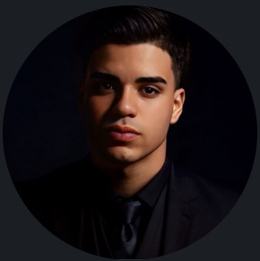

Sobre mim
Origem
Iniciei minha trajetória na área de tecnologia atuando como Analista de Suporte N1 e N2, onde tive contato direto com sistemas, resolução de problemas e atendimento a usuários. Essa experiência me deu uma base prática importante sobre como a tecnologia funciona no dia a dia.
Aprendizado
Com o tempo, percebi a importância de assumir o controle da minha evolução profissional. A partir disso, passei a encarar meus estudos com mais disciplina e foco, direcionando minha carreira para o desenvolvimento de software full stack.
Construção
Desde então, venho desenvolvendo projetos próprios para aplicar na prática os conhecimentos adquiridos, incluindo este portfólio. Tenho trabalhado com HTML, CSS e JavaScript, buscando evoluir na organização do código, lógica e construção de interfaces.
Atual
Atualmente, estou focado em aprofundar meus conhecimentos em desenvolvimento web e busco uma oportunidade como desenvolvedor júnior, com o objetivo de crescer tecnicamente e evoluir de forma consistente na área.